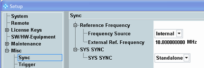

The R&S CMW can be synchronized to its internal reference frequency source or to an external reference signal.
For multi-CMW setups, a system synchronization signal has to be provided by one instrument to the other instruments of the setup.

Selects the reference frequency source to be used. The used reference signal is also routed to the output connector REF OUT 1, for synchronization of other instruments.
"Internal" | An internal frequency source is used, either the temperature-controlled crystal oscillator (TCXO) or the optional oven quartz (timebase OCXO, option R&S CMW-B690x). |
"External" | An external reference signal fed to the REF IN connector is used. The internal frequency source is ignored. The external reference signal must meet the specifications of the data sheet. |
Value of the external reference frequency. If "Frequency Source: External" is used, this value must be equal to the frequency of the signal fed in at the rear panel connector REF IN. The external reference signal must meet the specifications of the data sheet.
Note: If synchronization fails, or if no external signal with the correct frequency is available, the red "ERROR" LED at the front panels lights. The "frequency locked" state can also be checked via command.
This setting is only present if the SYS SYNC IN and OUT connectors are available.
The parameter specifies the mode of system time synchronization. It is essential when switching between single-CMW and multi-CMW setups. In a multi-CMW setup, all connected instruments must share the reference frequency and the system synchronization signal.
Note: Only use the cables labeled "SYS SYNC" which are included in the delivery.
If synchronization fails or if no synchronization signal is available, the red "ERROR" LED on the front panels blinks. See the error message in the "CMW" application for error details.
"Standalone" | The instrument uses its internal synchronization signal. |
"Generator" | The instrument provides an identical system synchronization signal at all SYS SYNC OUT rear panel connecters. One SYS SYNC OUT connector is connected to the SYS SYNC IN connector. Thus the instrument synchronizes itself and all other connected instruments. |
"Listener" | The instrument receives a time synchronization signal at SYS SYNC IN from another R&S CMW that is configured as "Generator". |